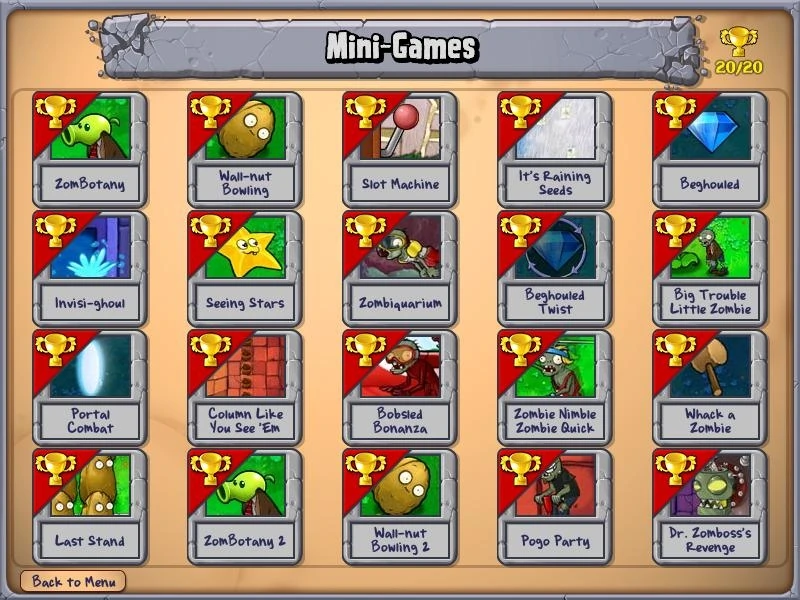
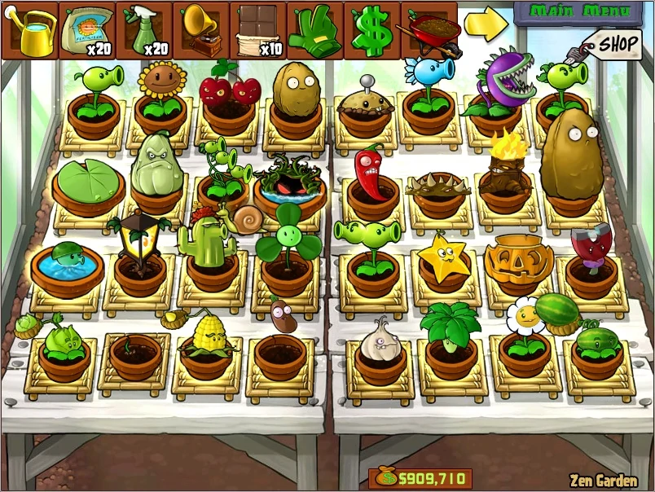

ADVENTURE MODE
Adventure Mode
This is the first and most important mode in Plants vs. Zombies. Day, Night, Pool, Fog, and Roof are the five groups of ten levels, each with their own characteristics. At the end of most levels, a new plant is unlocked and added to the player's roster, and in the other levels, the player receives an item or a note.
MINI GAMES
Mini Games
Mini-games can be found for the first
time in a present dropped by a zombie in
Level 3-2 of Adventure Mode. The mini-games
initially available are ZomBotany, Wall-nut
Bowling, and Slot Machine. The player can unlock
many more mini-games after the completion of
Adventure Mode.

PUZZLES
SURVIVAL
ZEN GARDEN
ZEN GARDEN
Zen Garden is a Plants vs. Zombies game mode.
It is a virtual garden in which the player keeps
plants that they have collected, usually as gifts.
They are the same plants used by the player in the
game. It is a non-competitive alternative environment
obtained by completing Adventure Mode Level 5-4.
If the players want plants, they can either play
the game normally or try to get a specific number
of streaks in I, Zombie Endless, or Vasebreaker
Endless. All Zen Garden plants must be watered
(except aquatic plants, which live in water)
and fertilized in order to grow, and either
bug sprayed or music played to make them drop
extra coins on a regular basis, but nothing
bad will happen if the player ignores their needs.
